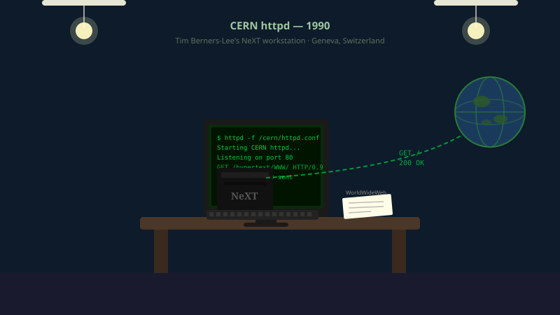

1990
CERN httpd, 세상 첫 웹사이트가 켜진 날
“자네 컴퓨터에 있는 문서가 내 화면에 떴잖아! 마법 같은데?” 스위스 연구실에서 팀 버너스-리가 만든 작은 프로그램 하나가 네이버·구글·페이스북의 조상이 됐어요.

1990년, 우리가 알고 있는 "웹"이 아직 존재하지 않던 시절이었어요. 인터넷은 있었지만, 그건 학자들이 이메일을 주고받거나 파일을 전송하는 용도였습니다. 누군가가 다른 사람의 컴퓨터에서 문서를 "본다"는 개념 자체가 없었어요. 정보를 공유하려면 파일을 이메일로 보내거나, FTP로 다운받거나, 출력해서 우편으로 보내야 했습니다.
스위스 CERN 연구소의 팀 버너스-리는 새로운 발상을 합니다. "내 컴퓨터가 24시간 켜져 있으면서, 누군가 '저 페이지 보여줘'라고 요청하면 그 페이지의 내용을 보내주는 작은 프로그램을 만들면 어떨까? 그러면 내 자료를 전 세계 누구나 즉시 볼 수 있겠는데."
그는 CERN httpd라는 작은 프로그램을 만들었어요. 이게 세계 최초의 웹 서버였습니다. 동작 원리는 단순했어요. 누군가 브라우저로 http://... 주소를 치면, CERN httpd가 그 요청을 받아서 해당하는 HTML 파일을 찾아 돌려보냈습니다. 한 동료 연구원이 다른 컴퓨터에서 페이지를 처음 받아보고 외쳤어요. "내가 클릭만 했는데, 자네 컴퓨터에 있는 문서가 내 화면에 떴잖아! 마법 같은데?"
이 단순한 프로그램이 모든 웹사이트의 조상이에요. 오늘날 네이버, 구글, 페이스북 같은 거대 사이트는 사실 그때 CERN httpd가 했던 일 — "요청을 받고, 적절한 페이지를 돌려준다" — 을 수십억 배 큰 규모로 하고 있을 뿐입니다. 한 사람이 만든 작은 프로그램이 30년 후 인류의 정보 공유 방식을 통째로 바꿔놓은 시작점이었어요.
CERN httpd는 정적인 문서나 폴더 목록을 보여주는 기본적인 기능을 제공하며, 훗날 웹 서버가 더 복잡한 작업을 처리할 수 있는 기반을 마련했습니다. 사용자의 요청을 받아 해석하고 알맞은 결과를 돌려준다는 웹 서버의 핵심적인 역할이 이때 처음으로 확립되었습니다.